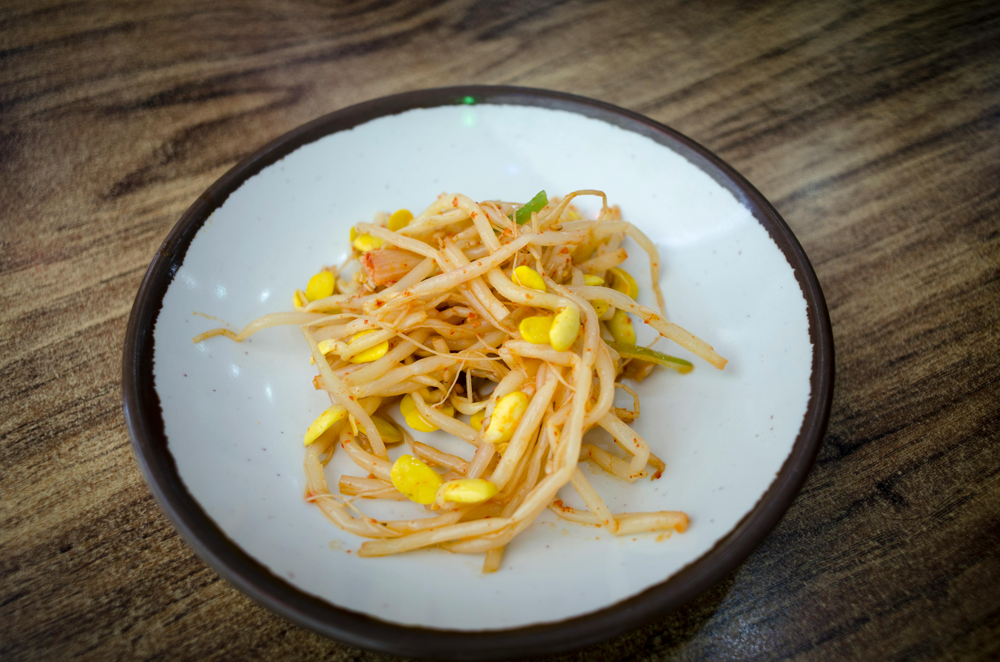

Main Page
Korean Soybean Sprouts

Description
Soybean sprout is a culinary vegetable grown by sprouting soybeans. It can be grown by placing and
watering the sprouted soybeans in the shade until the roots grow long. Soybean sprouts are extensively
cultivated and consumed in Asian countries.
Ingredients
- 1 pound soybean sprouts
- ¼ cup sesame oil
- 2 tablespoons soy sauce
- 2 tablespoons Korean chile powder
- 2 teaspoons sesame seeds
- 1 ½ teaspoons garlic, minced
- ¼ cup chopped green onion
- 2 teaspoons rice wine vinegar, or to taste
Steps
- Gather all ingredients.
- Bring a large pot of lightly salted water to a boil; add bean sprouts and cook, uncovered, until tender yet still crisp, about 15 seconds.
- Drain in a colander, then immediately immerse in ice water for several minutes to stop the cooking process. Drain well and set aside.
- Whisk sesame oil, soy sauce, Korean chile powder, sesame seeds, and garlic together in a large bowl.
- Stir in bean sprouts and toss to coat; sprinkle with green onions and season with rice wine vinegar. Refrigerate before serving.